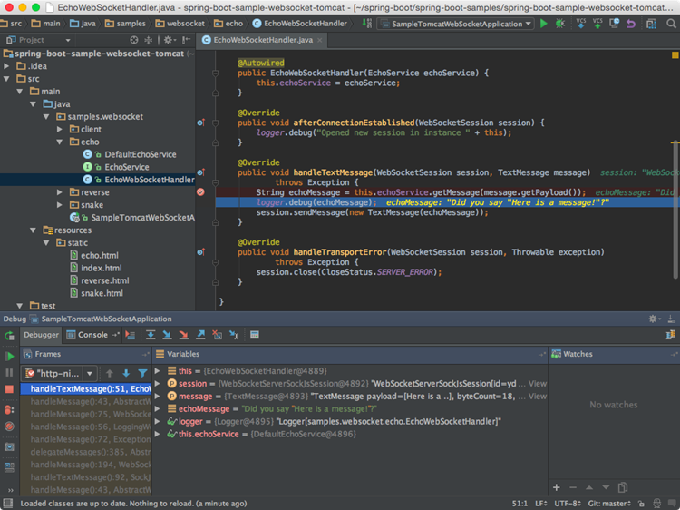
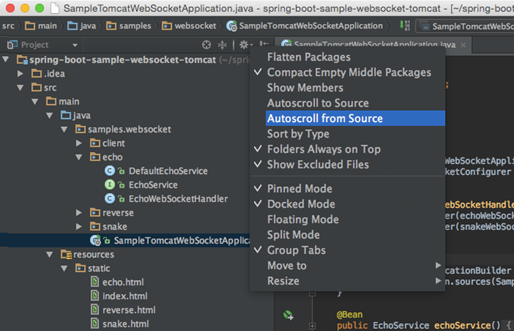

Android Studio VS eclipse
如果你使用eclipse很长一段时间，你需要了解这两种IDE之间最基本的差异，下面这张表格将详细描述两者在定义上的差别。包括他们的UI，编译工具，快捷键，以及项目配置等等。
相信目前大家用Eclipse的还是大多数，那么首先就来说一下Studio的一些优点，比较才能更有说服力，才能说明为什么我们要从Eclipse迁移到Studio。
- 1、Google推出的,为Android APP开发量身定制
毫无疑问，这个是它的最大优势，Android Stuido是Google推出，专门为Android“量身订做”的，是Google大力支持的一款基于IntelliJ IDEA改造的IDE。 - 2、速度更快
Eclipse的启动速度、响应速度、内存占用一直被诟病，相信大家这点应该深有体会，而且经常遇到卡死状态。Studio不管哪一个方面都全面领先Eclipse。 - 3、UI更漂亮
Stuido自带的Darcula主题的炫酷黑界面实在是高大上，相比而言Eclipse下的黑色主题太low了 - 4、更加智能
提示补全对于开发来说意义重大， Studio则更加智能，智能保存，从此再也不用每次都 Ctrl + S了。熟悉Studio以后效率会大大提升。 - 5、整合了Gradle构建工具
Gradle是一个新的构建工具，自Studio亮相之处就支持Gradle，可以说Gradle集合了Ant和Maven的优点，不管是配置、编译、打包都非常棒。 - 6、强大的UI编辑器
Android Studio的编辑器非常的智能，除了吸收Eclipse+ADT的优点之外，还自带了多设备的实时预览，相对这对Android开发者来说简直是神器啊。 - 7、内置终端
Studio内置终端，这对于习惯命令行操作的人来说简直是福音啊，再也不用来回切换了，一个Studio全部搞定。 - 8、更完善的插件系统
Studio下支持各种插件，如Git、Markdown、Gradle等等，你想要什么插件，直接搜索下载。 - 9、完美整合版本控制系统
安装的时候就自带了如GitHub, Git, SVN等流行的版本控制系统，可以直接check out你的项目。
不足之处：
暂未支持NDK，所以如果你的项目用到了NDK最好也不要使用Studio
UI
没有WorkSpace的概念
AndroidStudio和eclipse最大的差别在于，androidstudio并没有WorkSpace的概念，这就意味着，你仅
可以在同一时间编辑一个项目。AndroidStudio中，一个项目由多个module组成。
如果你有多个不相关的项目，你也可以在不同的窗口中打开。如果执意想在同一个窗口中打开不相关的项目，也可以
将这些项目以Module的形式导入。
以下这张图列出了eclipse 和 androidstudio之间的概念性差别。
| eclipse | AndroidStudio |
|---|---|
| Workspace | Project |
| Project | Module |
| Facet | Facet |
| Library | Library |
| JRE | SDK |
| Classpath variable | Classpath variable |
没有视角的概念
第二个比较大的区别在于Andorid Studio没有透视（perspectives），这意味着你不需要像eclipse那样手动的切换不同工作空间的布局。AndroidStudio可以自动的根据你的上下文切换相关的工具。例如，你在调试的时候，会自动切换到Debugger的工具窗口。

工具窗口
androidstudio同样具有工具窗口。打开一个工具窗口，只需要点击相应的工具窗口条即可选择想要打开的窗口。
如果窗口被隐藏，可以通过点击屏幕坐下角对应的图标。也可以通过ALT键+对应的数字打开。例如：
- 打开 Project：Alt+1；
- 打开 Terminal ： Alt+F12
设置project对应的文件自动滚动
默认情况下，Andorid Studio 并不支持在切换不同文件的时候，左侧的project文件跟着变动。可以右键点击“project”，在弹出的对话框中勾选”AutoScrollToSource” 和 “AutoScrollFromSource”，使得在点击左侧的文件名时，右侧窗口自动打开并跳转到对应的文件。点击右侧的文件窗口时，左侧也可以自动跳转。

显示行号
settings/Preferences | Editor | General | Appearance | Show line numbers